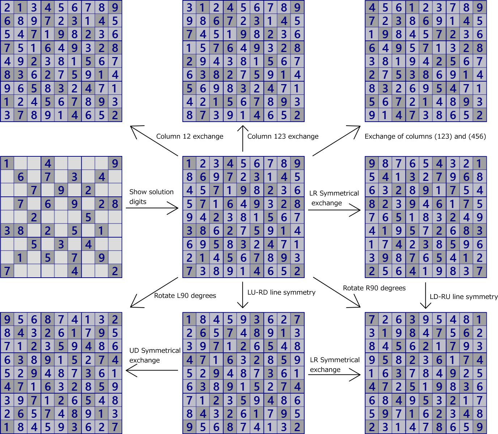
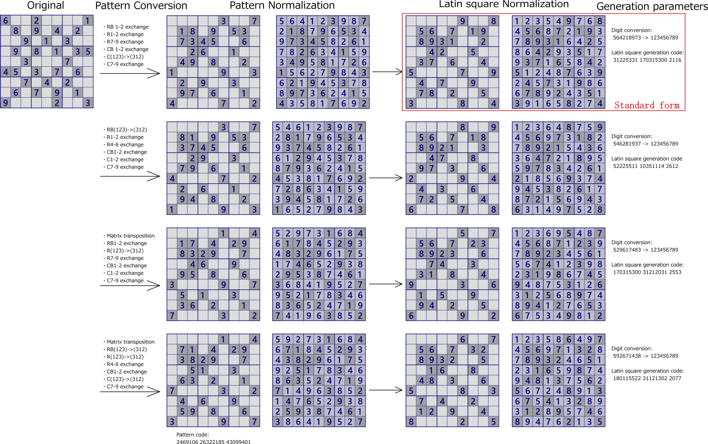

数独問題の変換・標準化
数独の問題は、ある条件の範囲で見た目を変えることができます。
数字を交換、あるいは任意の順番に並べた数字列に（634581279）→（123456789）に変換しても、数独の問題として成立します。
また、1列と2列の交換、列の循環交換(1→2→3→1)、(123列)と(456列)の交換、
同様に行の交換、行と列の交換(転置)、あるいはこれらの組み合わせ などの変換を行っても、数独の問題として成立します。
ただし、1列と4列の交換のように数独の制約を超える変換はできません。
回転は、行と列の交換と上下・左右の交換の組合せで表現できるので、ここでは考えないことにします。

当然のことですが、このような変換を行っても、また、以下に述べる数字の変換を行っても、数独の問題としての本質は変わりません。
難易度やそれぞれの段階で適用できる解析アルゴリズムも全く同じです。
（なお、数独の解き方は、1つの場面でも複数のアルゴリズムが適用できることがあります。
どのアルゴリズムを適用するかは、解くヒトの好み、プログラムの実装によるので、解き方に多少（多々）の違いは生じます。
そのようなことは気にしないことにします。）
数独の問題は、表出数字位置のパターンと、解となるブロック制約付きのラテン方陣の組合せです。
パターンとラテン方陣のそれぞれの標準形の組合せで、数独の問題の標準形になります。
もちろん、パターンとラテン方陣を組み合わせるだけでは、問題が解けない、複数の解があるなど、数独の問題になりません。
GNPXの問題作成機能は、ラテン方陣を生成し、表出数字位置パターンと合わせて問題を作り、
それが解析アルゴリズムで解けるかどうかをテストしています。
以下では数独問題の変換をきちんと定義し、数独問題の標準化の方法を定めます。
数独問題の変換（非対称変換）
数独の問題は、行・列の交換と、行列の転置、およびそれらの組合せの変換を行っても、成立します。 ただし、例えば列1と列4の交換のように数独の規則を超える変換はできません。 制約の範囲内での変換は、次のように分類整理できます。
- 行ブロックの変換
行123をまとめて行ブロック1とします。同様に行456を行ブロック2、行789を行ブロック3とします。 行ブロックは、任意に交換できます。この交換は 3!=6 通りあります。 - 行ブロックn内の変換（n=1,2,3）
行ブロックn内の行abcは、任意に交換できます。この交換は 3!=6 通りあります。 - 列ブロックの変換
列123をまとめて列ブロック1とします。同様に列456を列ブロック2、列789を列ブロック3とします。 列ブロックは、任意に交換できます。この交換は 3!=6 通りあります。 - 列ブロックn内の変換（n=1,2,3）
列ブロックn内の列abcは、任意に交換できます。この交換は 3!=6 通りあります。 - 行と列の転置
数独問題の変換（対称変換）
問題パターンに中心に関する点対称の制約を課す場合には、次のような変換になります。
- 行ブロック1と3の鏡像交換
行123と行987を交換する。 - 行ブロック1の変換と連動した行ブロック3の鏡像変換
行123の任意の変換に連動して、行789を鏡像的に変換する。例えば行13の交換に連動して行79を交換。 この変換は3!=6通りあります。 - 行46の交換
- 列ブロック1と3の鏡像交換
列123と列987を交換する。 - 列ブロック1の変換と連動した列ブロック3の鏡像変換
列123の任意の変換に連動して、列789を鏡像的に変換する。例えば列13の交換に連動して列79を交換。 この変換は3!=6通りあります。 - 列46の交換
- 行と列の転置
数独の標準化
問題パターンの標準化
問題パターンは、行123のセルの表出数字なし/ありを0/1に対応させ、27桁の2進数で表します。
同様に行456、行789を27桁の2進数で表します。
数独問題パターンは、この3つ組の数字で表現します。これを「数独パターン数」と呼ぶことにします。次の問題の場合には、
数独パターン数は [75846740,44861866,22107401]です。なお、81ビットの整数で表現しても同じです。

100100001 010101010 001010100 = 289*512*512 + 170*512 + 84 = 75846740
010101011 001000100 110101010 = 171*512*512 + 8*512 + 426 = 44861866
001010100 010101010 100001001 = 84*512*512 + 170*512 + 265 = 22107401
先の数独問題の変換により数独パターン数は変わります。従って、この変換による数独パターン数には最小値があります。
数独パターン数の最小値を数独問題の指標値の1つとし、「パターン指標値」と呼ぶこととします。
任意の数独問題にパターン指標値は1つですが、変換方法（行変換、列変換、行列転置の組合せ）は複数ある場合があります。
この問題の場合には、4とおりの変換列で問題パターンの標準化ができます（次項の図)。
なお、問題パターンの変換方法の表現では、あいまいさを防ぐため、転置変換を含む場合は最初に転置を行うことにします。
数独解の標準化
数独解(ブロック制約付きラテン方陣)は、“問題パターンの標準化”を施した数独問題に対し、 ①ブロック1の数字配列の標準化と、②ラテン方陣の生成順 の組合せで指標化します。 次の図は、左は元の問題、中央はパターンの標準化後の問題、右はブロック1の数字配列を123456789に交換した問題です。 後は、ブロック制約付きラテン方陣の生成法の順に、ラテン方陣を生成します。
- ブロック2の順序付け
- ブロック3の順序付け
- ブロック4の順序付け
- ブロック7の順序付け
- ブロック5・6・8・9のパターンを生成し、パターン標準化後の問題と照合
このように、ブロック制約付きのラテン方陣の生成はコード化できるので、このコードを指標に用います。
結局、パターン指標とラテン方陣の指標の最小となる変換を施した問題を 標準形とします。
数独の問題は、行・列・転置変換、表出数字の変換で見た目を変えることはできますが標準形は唯一なので、
変換で作成した問題の同一性を識別できます。
